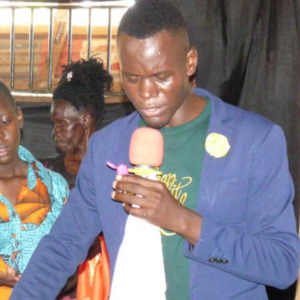

Zion Healing and Restoration Ministry is a Christian church based in Lira, Uganda, founded and pastored by Bishop Abbey Kiboma, a prophet and spiritual leader devoted to healing, deliverance, and transformation. The ministry focuses on bringing spiritual restoration to individuals and communities through dynamic worship services, powerful prayer, and teaching from Scripture that emphasizes God’s love and the healing power of faith
Our Purpose.
A place of spiritual renewal, healing, and encounter with God for individuals and families in their community and beyond.
As a Christian ministry rooted in biblical faith, it seeks to restore broken lives through prayer, worship, and teaching grounded in Scripture, offering believers a supportive environment where they can experience God’s love, receive spiritual restoration, and grow deeper in their relationship with Christ.
Our Mission.
To boldly proclaim the gospel of Jesus Christ, bringing hope and transformation to all who come to its services and outreach efforts throughout Uganda and the world.
He said to him, ‘If they do not listen to Moses and the Prophets, they will not be convinced even if someone rises from the dead.
Luke 16:31 (NIV)
Our Values.
Identity in Christ
We value helping every believer understand and embrace their true identity in Christ, encouraging them to live confidently as children of God, grounded in His love, righteousness, and purpose.
Church Is Family
We emphasize that the church is more than a gathering—it is a family where members support, encourage, and care for one another, fostering a sense of belonging, unity, and spiritual growth.
Kingdom Culture
We uphold a kingdom culture, teaching believers to prioritize God’s values and principles in all areas of life, promoting integrity, service, and godly influence in the community and society.
Spirit Led Life
Living a spirit-led life is central, as the ministry encourages reliance on the Holy Spirit for guidance, wisdom, and empowerment in daily living, ministry work, and personal decision-making.
What We Believe.
God message and vistation
We believe that God continues to visit His people in many ways, often sending messages through those He places in our lives.
When we receive the message God sends through others, whether it’s a sermon, advice from a fellow believer, or even the words we read today,we are receiving God Himself.
We embrace these visitations with faith and humility, knowing that God desires to reveal Himself to us. By opening our hearts to His Word and the messages He sends, we experience His guidance, encouragement, and transformation in our lives.
Honouring God Through Success
Hosea 4:7 (AMP), “The more they multiplied, the more they sinned against Me; I will change their glory into shame.”
We believe that true success honors God and are gifts from Him, but without humility and gratitude, they can lead to pride and destruction.
We commit to using all that God blesses us with for good, serving others, and glorifying Him. We choose to remember that everything we have comes from Him, and by staying faithful, we keep our blessings from turning into shame.
God Protection
Jeremiah 15:21 (AMP) says, “So I will rescue you out of the hand of the wicked, And I will redeem you from the [grasping] palm of the terrible and ruthless [tyrant].
We believe that God sees the dangers we face and promises to rescue us from the hands of the wicked. We trust Him daily for protection over our lives, families, work, and blessings, knowing that His power defeats every evil plan and brings us peace.
Freedom Given to us through Christ.
Galatians 5:1 NKJV says, “Stand fast therefore in the liberty by which Christ has made us free, and do not be entangled again with a yoke of bondage.”
We believe that Christ has already secured our freedom from sin, oppression, and every form of bondage.
We commit to living in victory, walking in the power of the Holy Spirit over our bodies, relationships, finances, and every area of life.y
Meet Our Team.
Bishop Abbey Kiboma Bishop - Lira
A prophetic pastor, spiritual leader, and founder of Zion Healing and Restoration Ministry, overseeing all Zion Ministry branches.

Jane Doe Elders Leader
A prophetic pastor, spiritual leader, and founder of Zion Healing and Restoration Ministry, overseeing all Zion Ministry branches.
Prophet Abby Kikoni Mt. Zion Ministries - Mbale
Prophet Abby K. Christian is an anointed prophetic minister of Mt. Zion Ministries in Mbale, Uganda, known for powerful worship, prayer, and prophetic services.

Prophet Ronnie Zion Ministry - Jinja
Prophet Ronnie leads Zion Church Jinja, a prophetic ministry in Jinja, Uganda, empowering believers through prayer, prophecy, worship, and spiritual transformation.

John Wesley Youth Pastor
Est voluptatem sequi debitis sunt et rerum. Officia possimus dolorum optio quis ducimus. Quo asperiores laudantium voluptatum numquam possimus. Saepe blanditiis voluptatem natus optio.

Aimee Semple McPherson Kids Church Director
Laudantium cumque pariatur doloribus et molestias. Natus et voluptas consequuntur quo. Ut eos neque nostrum fugiat impedit. Deserunt qui vitae quidem. Aut laudantium veniam omnis sed ullam quo.